Certificate
Available for work
Code / Creative Design / Automation / AI
Part designer, part developer,
part “wait, I can automate that.”
Diploma
Web Development & Design
Bachelor of ICT
Available for work
Code / Creative Design / Automation / AI
Part designer, part developer,
part “wait, I can automate that.”
Certificate
Diploma
Bachelor of ICT
How I work
I design the experience, develop the system and automate the parts that slow people down.
View selected work01/ Direction
Shape the visual language, interaction and story before the build begins.
02/ Craft
Turn the idea into responsive, accessible and dependable digital experiences.
03/ Leverage
Connect the repetitive parts so the work keeps moving long after launch.
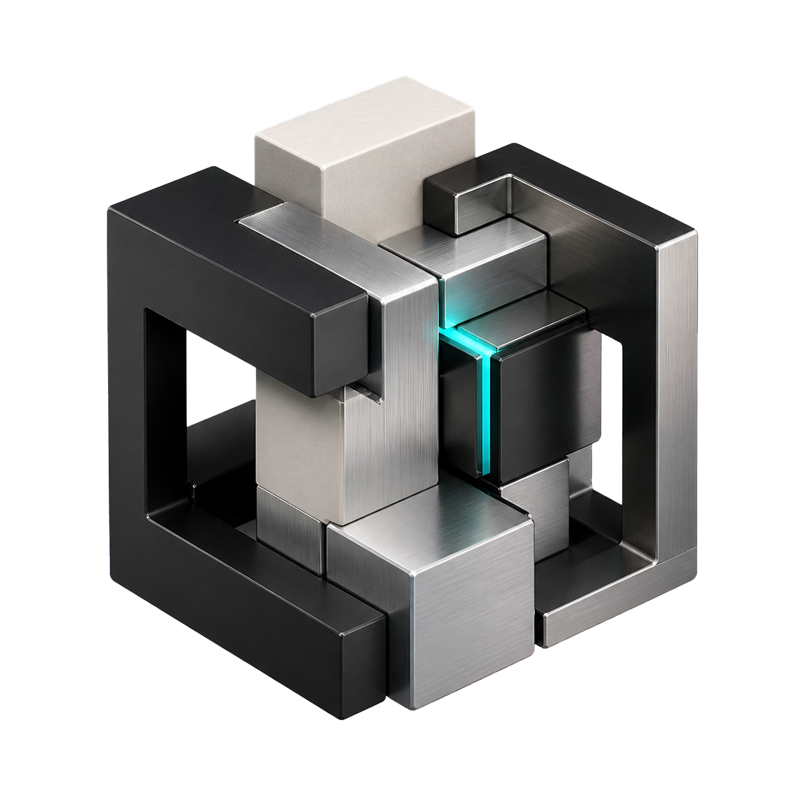
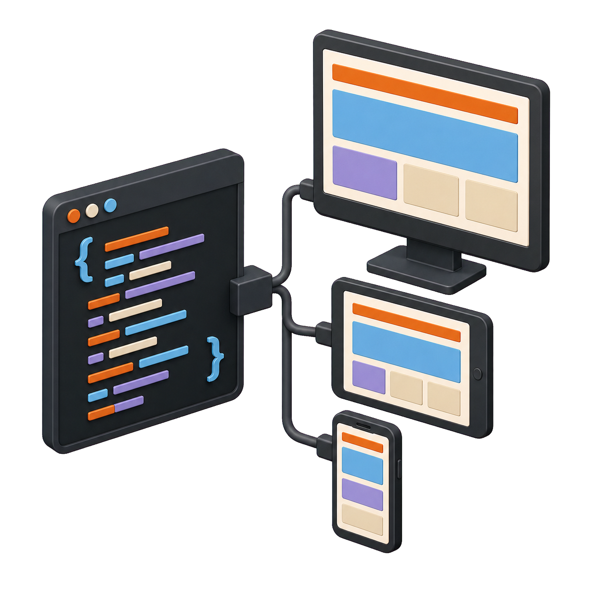
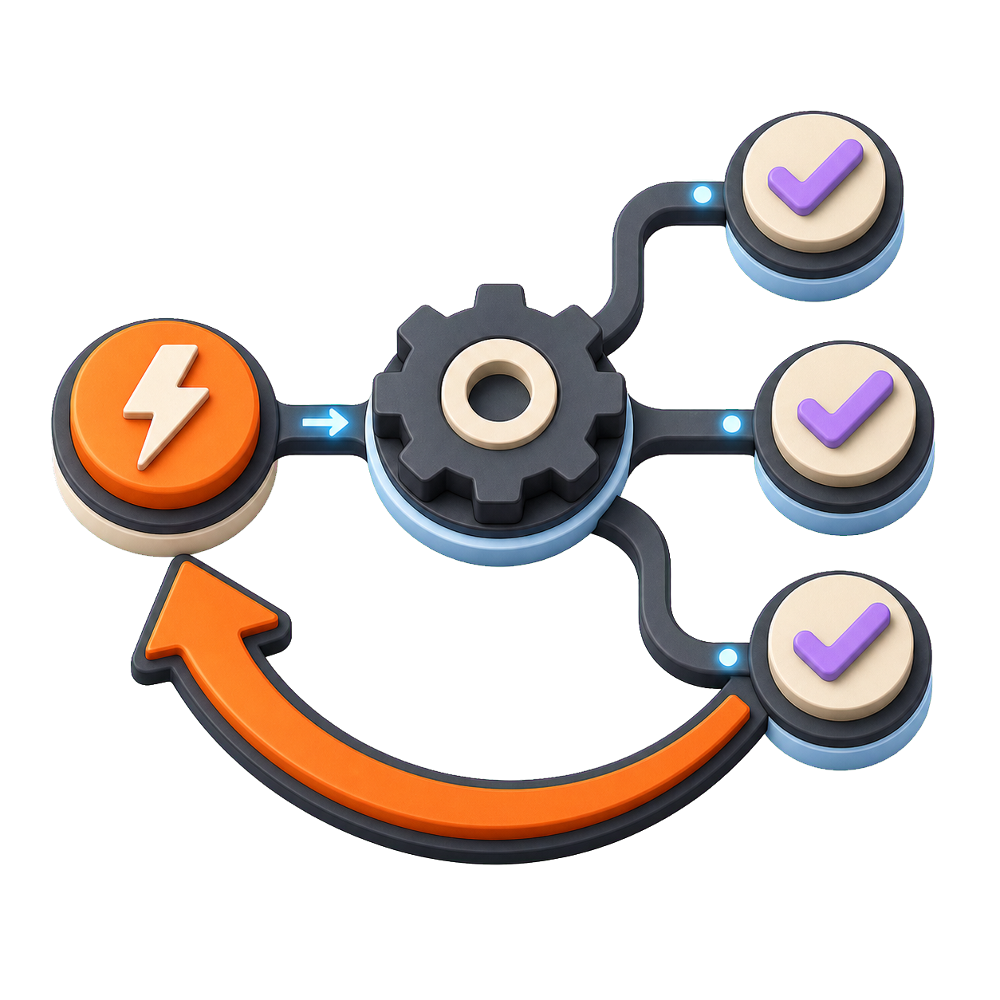
Motion study
Every ball is locked to the same geometry that draws its track.
Selected work
A mix of client work, personal projects and ideas I could not leave alone.
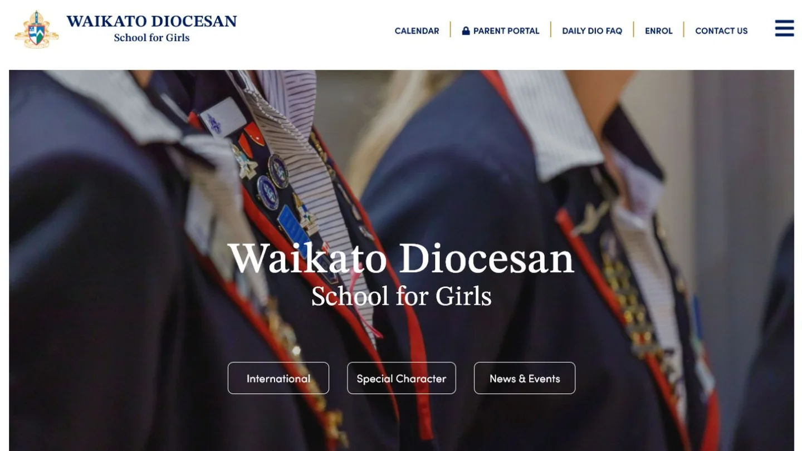
01 / Case study
A polished school website designed to help families discover the school and its community.
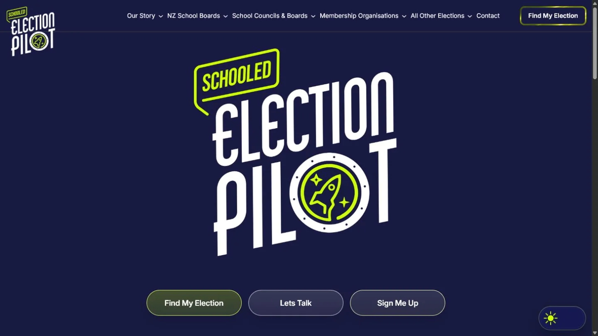
02 / Digital experience
An interactive election experience built to make exploring candidates and choices clearer.
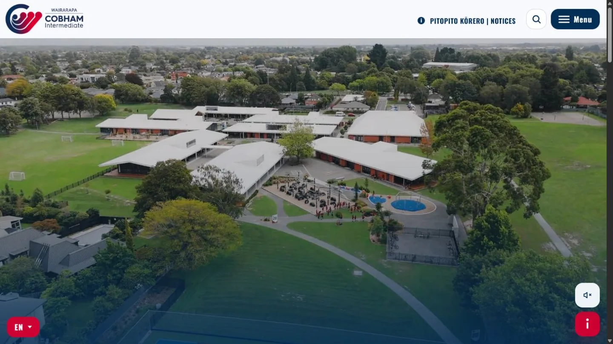
03 / School website
A welcoming, informative website for a school community in the Wairarapa.
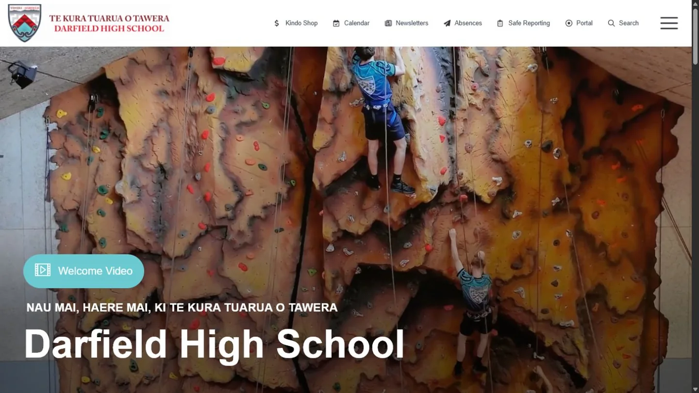
04 / School website
A clear, confident digital home for students, whānau and the wider school community.
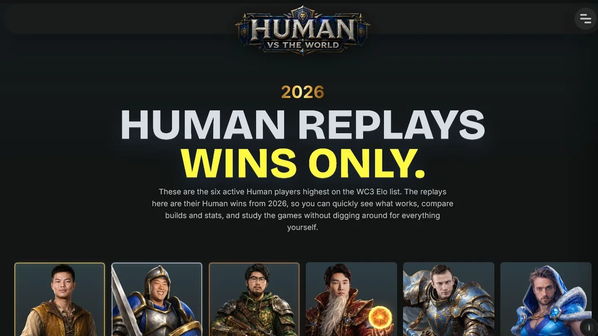
05 / Game experiment
A playful interactive experiment inspired by the strategy and spectacle of Warcraft III.
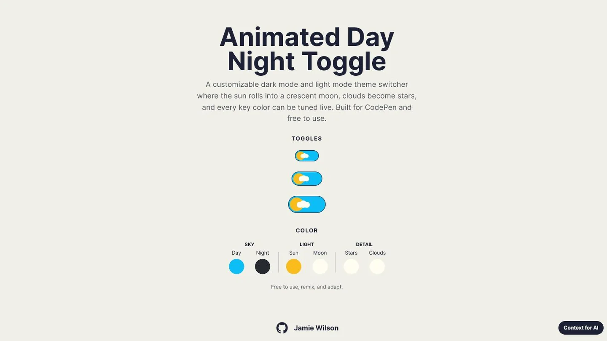
06 / Animation
A small interface study exploring motion, atmosphere and a simple day-to-night transition.
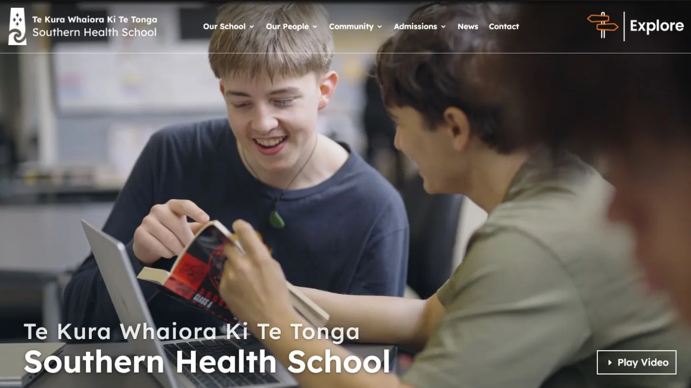
07 / School website
A welcoming digital home connecting learners, whānau and the wider Southern Health School community.
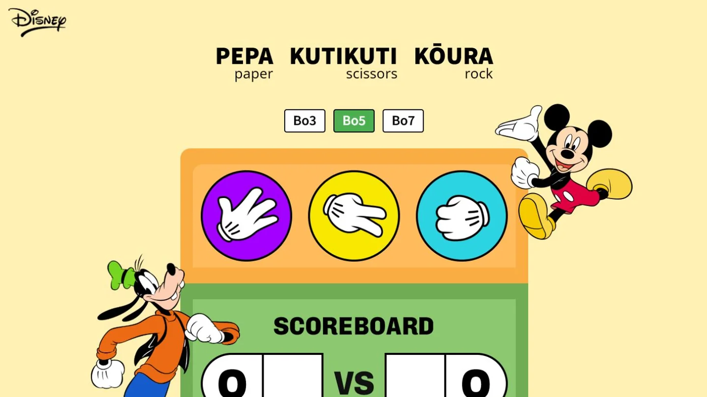
08 / Game
A colourful rock-paper-scissors game with playful characters, quick rounds and a live scoreboard.
The path so far
Each course, project and rabbit hole added something new. Together, they became the way I work today.
I began with a Certificate in Information Technology Essentials — the first real step toward making things for the web.
The Diploma in Web Development and Design turned curiosity into a growing fluency with structure, interaction and visual detail.
I completed the diploma and began a Bachelor of ICT in Software Development, widening the lens from interfaces to the systems underneath.
Software development became a way to connect design, logic and useful outcomes — with room for experiments along the way.
After completing the Bachelor of ICT, the next part is about putting all the pieces together: creative design, automation and AI.
Curriculum vitae / 2026
Website developer and AI engineer with a passion for design. Experience creating brand systems and turning stakeholder requirements into innovative and accessible digital experiences.
Hands-on across Figma, WordPress and CMS platforms, front-end development, documentation and AI-assisted workflows—bridging design intent with practical implementation.
Download PDF01 / Core strengths
Figma, responsive layout systems, reusable UI patterns, component variants, interaction quality, visual refinement, information architecture and UX guidelines.
HTML, CSS, JavaScript, custom front-end work, WordPress, Gutenberg, Divi, Elementor, Avada and performance-minded refinement.
Hail CMS, Hail Connect, content workflows, publication feeds, Cloudways, LocalWP, WP-CLI, DNS, QA and launch support.
Git, GitHub, VS Code, Notion, HelpScout, structured documentation, Codex and AI-assisted design and development workflows.
02 / Experience
Hail — Your Communications Partner
Hail — Your Communications Partner
Hail — Your Communications Partner
03 / Toolkit
Figma / HTML / CSS / JavaScript
WordPress / Hail CMS / Gutenberg / Divi / Elementor / Avada
Git / GitHub / VS Code / LocalWP / WP-CLI / Cloudways / WPStaq / DNS
Notion / HelpScout / Codex / AI-assisted design and development